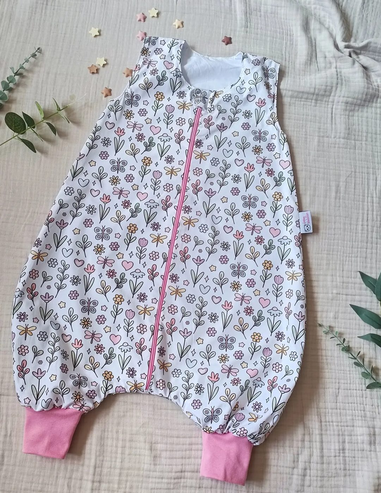
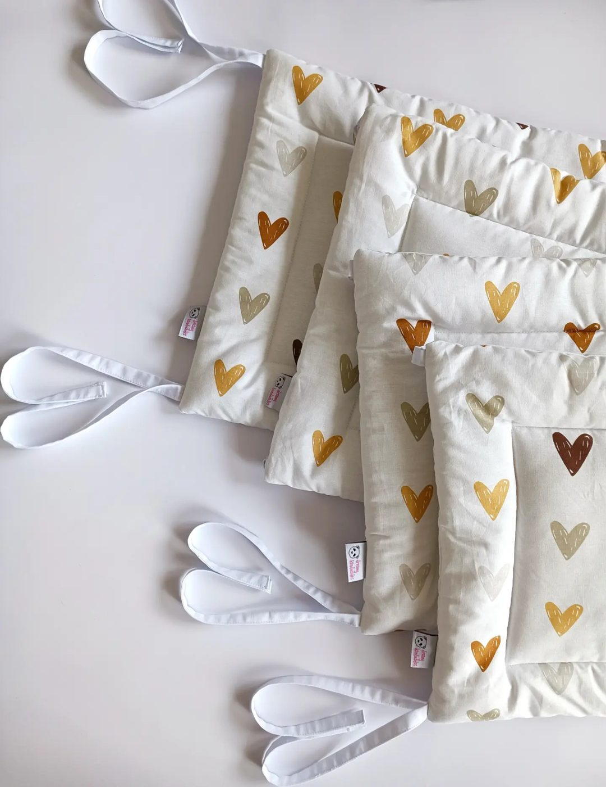
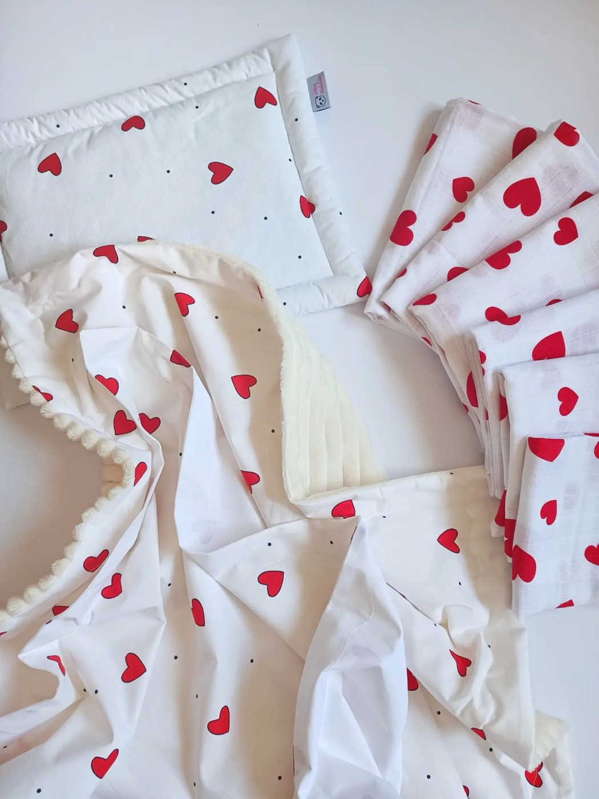
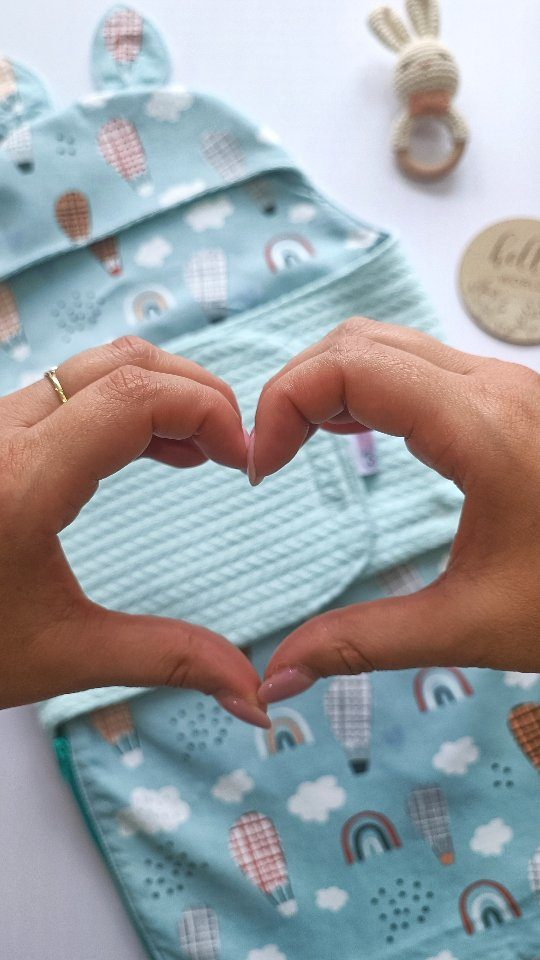
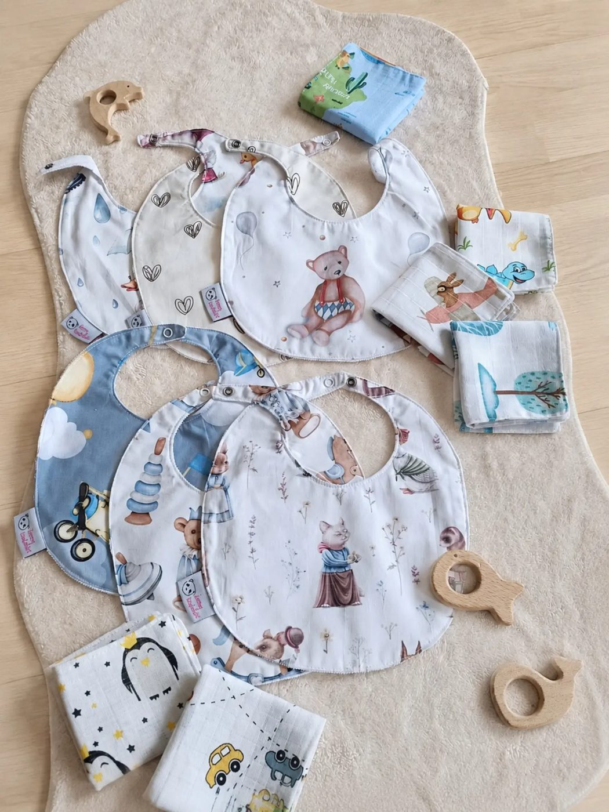
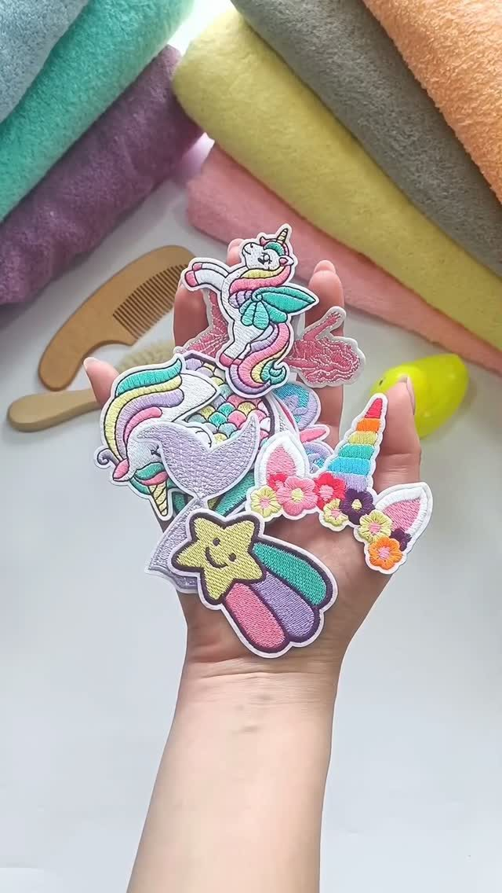
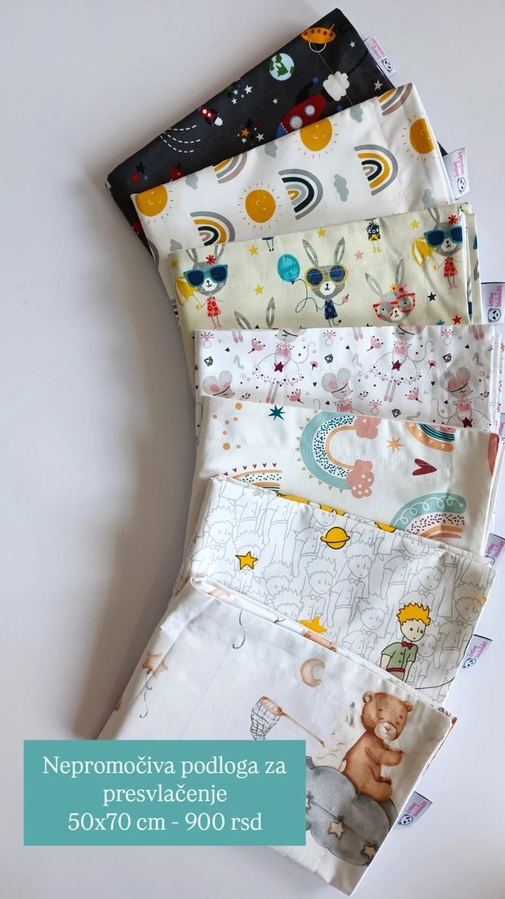

Miran san za bebu, i za mamu
Naše ručno rađene vreće najbolji su saveznici mama. Beba je uvek ušuškana, bez rizika da se otkrije i prehladi, a vi se budite naspavani.


Dete ne trpi prekrivač? Evo vreće.
Ako vam je san iseckan čestim buđenjem zbog brige da se dete ponovo otkrilo, vreća za spavanje je jedna briga manje.
Dolazi u tri oblika: klasičan džak, model sa plićim nogavicama i model sa rukavima na skidanje. A debljina se bira prema temperaturi u sobi.
Pogledaj sve debljineOd frotira do muslina
Ljubav na prvo ušuškavanje

Ogradice za krevetac
trostrana ravna 60×120×60 cm · jastučasta 4.100
Jastuci, pelene i ćebad
ravan jastuk 650 · pelena 75×75 500 · krzneno ćebence od 2.100
Dunjica
oko 80 cm · do petog, šestog meseca
Portikle i brisalice
set od tri nepromočive portikle 1.100
Bade mantilići
vezeni amblemi, 100% pamuk
Nepromočiva podloga
za presvlačenje 50×70 cmCene sa profila brenda. Peškiri (80×80 – 1.750 RSD, 100×100 – 2.200 RSD), pelene i brisalice: na pet naručenih, šesta je gratis. 🎁

Tri poruke i vreća kreće da se šije
Džak ili sa nogavicama, sa rukavima ili bez, i debljina prema temperaturi sobe.
Premerite dete baš od ramena do stopala. Vreće se ne šiju u standardnim veličinama.
Izaberite dezen, a tačnu cenu dobijate u odgovoru, jer zavisi od modela, debljine i dužine.
Mame pišu nam
„Ništa lepše, kvalitetnije nisam skoro videla. Od materijala, kroja, dezena. Zaista sve pohvale, vidi se da je rađeno s ljubavlju. Od mene imate sve preporuke!“
Mama, iz highlighta „Utisci“„Samo da javim da je vreća stigla i da je prelepa! Znala sam da ćete je lepo sašiti jer već imamo jednu vašu, ali ovaj pamuk je još lepši, posebno sam oduševljena mekim pamukom iznutra. Dezen je priča za sebe, prelep!“
Mama, iz highlighta „Utisci“„Ne budim se da proveravam da li joj je cebence preko glave, ili da li se je otkrila skroz pa da joj bude hladno. Ovako najjednostavnije, ali i najjudobnije. … Materijal fenomenalan.“
Mama, iz highlighta „Utisci“„Hvala. Predivni su dzakovi. Svako dobro“
Mama, iz highlighta „Utisci“Pišite nam u inbox 💌
Zajedno ćemo naći pravu vreću za vaše mališane.
Pošalji poruku na Instagramu